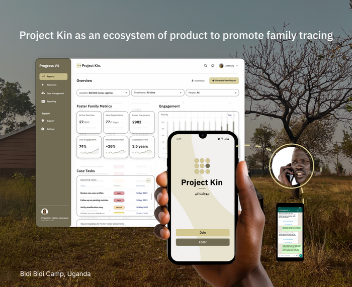
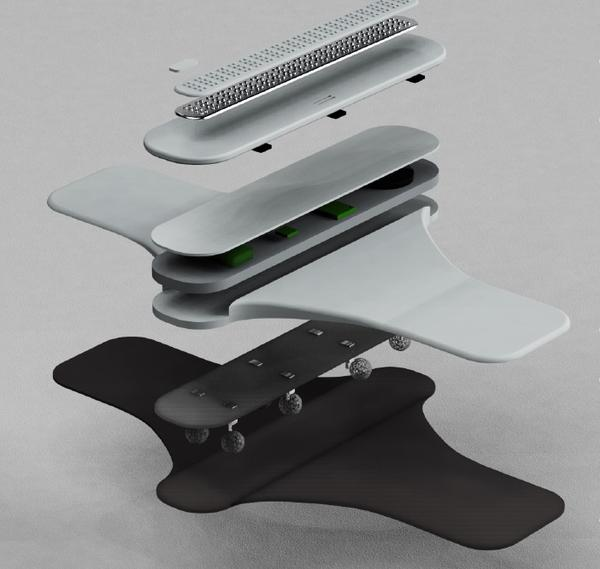
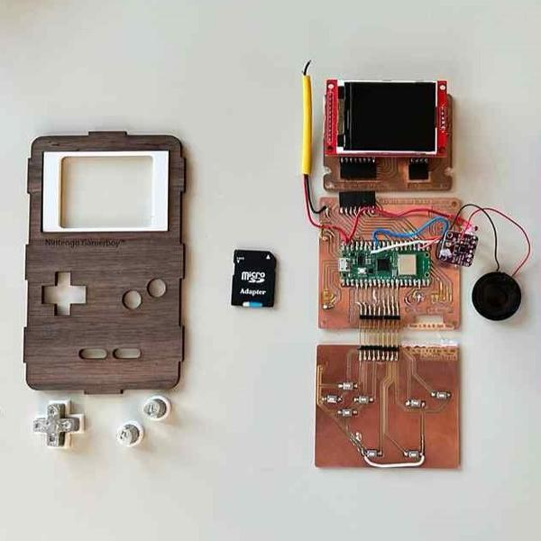
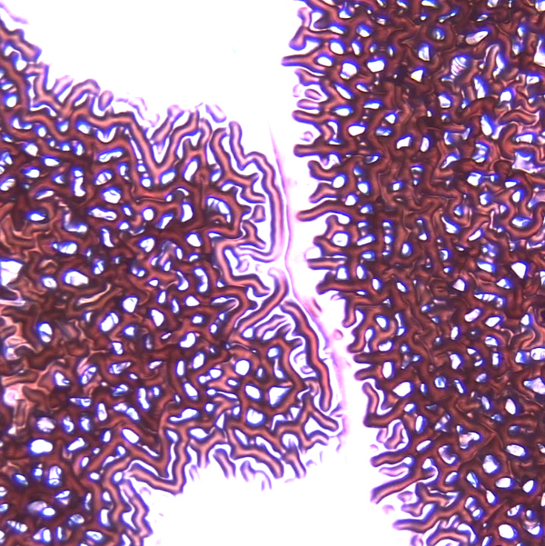
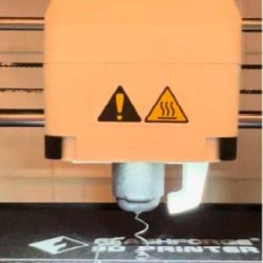
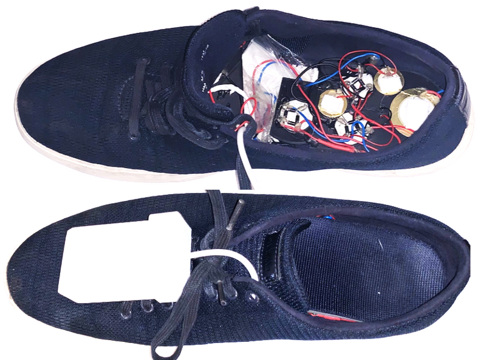

01 PROJECT KIN
Project Kin addresses the problem of family separation in refugee camps through an accessible online platform for refugees that allows them to find relatives themselves, by prompting refugees to input information through a question-based game. Family members looking to reconnect can be identified by shared responses.
02 GLOTTIS COMPUTER INTERFACE
By recording EMG data from the glottis while people speak, we trained an CNN to predict intended phonemes when silently mouthing words by using the electrical activity of the muscles in the larynx during phonation.
With improved sEMG technology, our findings could be applied to assistive devices that offer individuals with speech production impairments an alternative means of speaking.
Read More

03 FELT
A bridge for the deafblind community to connect with the world. Through the combination of computer vision and audio analysis by a shirt-worn pin, Felt allows the deafblind to recognize the emotions of those they ineract with through haptic feedback while a braile display renders the speech in real time.

04 NINTENDO GAMEBOY (FROM SCRATCH)
Beginning with a spool of filament, a piece of wood, and a set of uncut copper plated boards, I built a working Nintendo Gameboy running as an emulator on an RP2040 in a custom designed chasis with boards milled in a small CNC machine based on schematics I designed. The final product reads game ROMs over the SD card protocol.

05 NISSL (BACTERIAL CELLULOSE)
Using E. coli nissl, a sub-species of E. coli that produces cellulose when fed, we created a directed evolution system to select for E. coli that could consume glycerol instead of sugar or corn as is traditionally used. This would allow for the production of cellulose feedstock from waste glycerol, a byproduct of biodiesel production.
06 HIDDEN THREADS
A data-driven analysis of the relationship between a victim's dress and sexual assault in court cases across India. A ml model labels case transcripts based on language surrounding the victim's dress, and the correlation between the presence of this language and the verdict is explored.

07 UNIVERSAL FDM PRINTING
While traditional slicers allow for the stable creation of layered 3D prints, they do not allow for the printing of vertical columns, continuous spirals, or countless other geometries. This project explores the creation of a slicer that allows for prints to combine standard layering with continuous extrusion techniques.

08 HUMAN POWER HARVESTING
Two devices atempt to harvest human power to charge a phone and light a headlamp respectively. One device is an insole that uses piezo-electric crystals to generate power from the pressure of walking. The other is a headlamp that uses a peltier module to generate power from the temperature difference between the wearer's head and the environment.